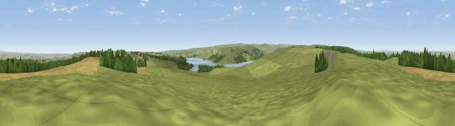

Viewpoint near Slaley
#5491 in England · top 3% of its area beats it · near Slaley · path 297 mWhere it is
The exact computed spot (NZ 00425 54875). Click the marker for map links.
Public access: the nearest public right of way is about 297 m away — the final stretch may cross private land. Computed from Natural England's CRoW access layer and OpenStreetMap rights of way — not the legal definitive map. Always verify locally.
The view, rendered

A 360° render of this exact spot computed from the terrain model, tree cover and land cover — summer colours, afternoon light, calibrated against photographs of famous viewpoints. Real trees, hedges and buildings will differ in detail.
The panorama
Grey silhouette: terrain skyline in each direction (720 bearings, Earth curvature and refraction included). Dashed green: skyline with trees (+15 m) and buildings (+8 m) as obstacles. Blue strip: how far the ground is visible on each bearing.
Where the view opens
Wedge length = distance to the farthest visible ground on that bearing (vegetation-aware). Rings at 10, 25 and 50 km.
What fills the view
49% grassland · 31% cropland · 17% woodland · 2% water
Angular shares of the visible panorama (visual magnitude), not map area. Landscape diversity 0.49 (0–1 Shannon).
Key numbers
More beautiful places nearby
The staircase of upgrades: each row has a higher view potential than everything closer. Driving times are estimates from straight-line distance, calibrated against real road routing — check an actual route before setting out.
| Place | Direction | Drive | Score |
|---|---|---|---|
| Currock Hill | ENE · 10 km | ~19 min | 70.4 |
| Viewpoint near Hedley on the Hill | ENE · 11 km | ~20 min | 71.5 |
| Viewpoint near Greenside | ENE · 13 km | ~24 min | 74.2 |
| Pontop Pike | E · 15 km | ~26 min | 77.8 |
| Little Dun Fell | SW · 37 km | ~56 min | 78.4 |
| Cross Fell | WSW · 38 km | ~57 min | 78.7 |
| Viewpoint near Thropton | N · 44 km | ~64 min | 81.8 |
| Dove Crag | N · 44 km | ~64 min | 82.3 |
54.88862, -1.99490 · source: screening · position refined by local search. Computed location — check access rights before visiting.